iPhone User Guide
Everything you need to know about the iPhone
Say hello to the future
Get to know iPhone 11, iPhone 11 Pro, and iPhone 11 Pro Max. Learn intuitive gestures, use your face as your password, and discover what’s possible with the amazing Ultra Wide camera.
One camera for all the shots
Use your iPhone to take great shots in any situation. From a candid photo to a studio-quality portrait—you can take them all with your iPhone camera.
Take a trip with iPhone
iPhone makes traveling a breeze—scout locations before you leave, check airport information, keep credit cards and travel passes organized, and relive the memories when you get home
Start healthy habits
iPhone can help you track data about your health and activity patterns, become more mindful, and start a bedtime routine.
What's new in iOS 13
Dark Mode A new Dark Mode option gives the entire iOS experience a beautiful dark color scheme that’s perfect for low-light environments. Quickly turn on Dark Mode from Control Center, or set it to automatically turn on at night. When Dark Mode is turned on, the light from your device won’t disturb the people around you. See Adjust the screen brightness and color on iPhone.

Photos Browse your photo library by days, months, and years so it’s easy to find and share your photos and videos. As you scroll, Live Photos and videos play, bringing your photo library to life. Redesigned editing tools make it easy for you to apply changes to your photos and see at a glance where those changes were made. See View photos and videos and Edit photos and videos.
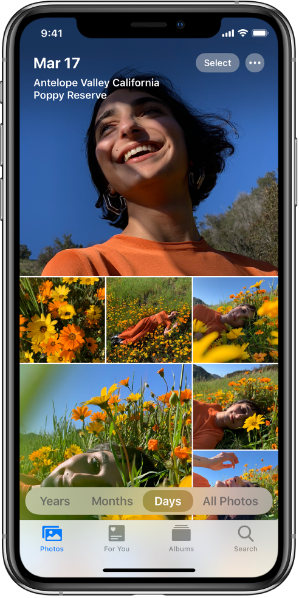Camera Portrait Lighting now lets you virtually adjust the intensity of each studio lighting effect. On supported models, a new Portrait Lighting effect, High-Key Light Mono, creates a beautiful look with a grayscale subject on a white background. See Take Portrait mode photos with your iPhone camera.
Maps Rebuilt from the ground up, Maps features more realistic details for roads, beaches, parks, and buildings. Explore where you’re going before you get there with Look Around, build collections of your favorite locations, share your ETA, and more. See Look around in Maps, Create collections in Maps, and Share your ETA.
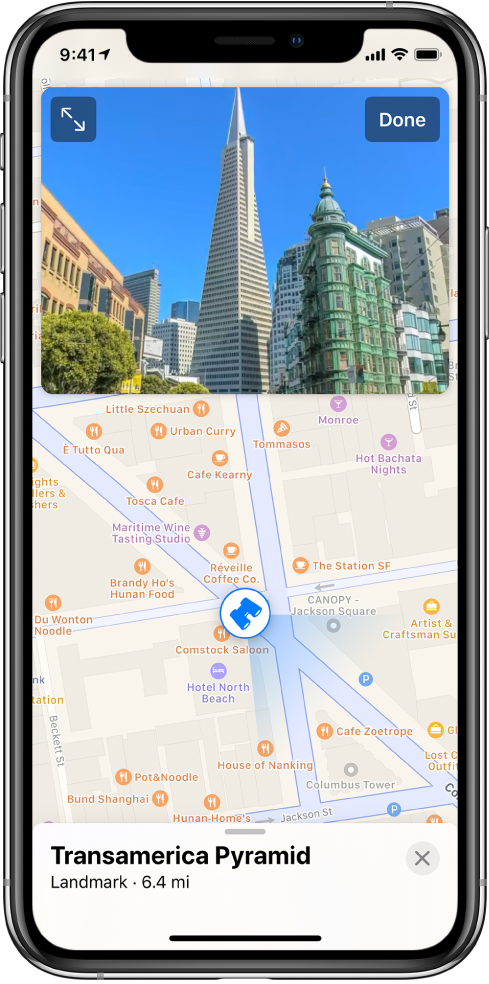Sign in with Apple Sign in to apps and websites quickly and easily using the Apple ID you already have. No filling out forms or creating new passwords—just tap the Sign in with Apple button in any participating app or on a website, use Face ID or Touch ID to complete sign in, and you’re all set. Apple doesn’t track your profile and protects your Apple ID with two-factor authentication. See Sign in with Apple.
Siri The new Siri voice sounds incredibly natural, particularly when speaking longer phrases. Siri also offers personalized suggestions when you search in Podcasts, Safari, and Maps, and can detect reminders in Messages. See Ask Siri.
Animoji and Memoji Three new Animoji characters—mouse, octopus, and cow—give you more options to express yourself. Make your own Memoji one in a trillion with new hairstyles, headwear, makeup, and piercings. Automatically generate sticker packs based on your Animoji and Memoji characters that allow you to express a range of emotions in Messages. See Use Animoji and Memoji in Messages.
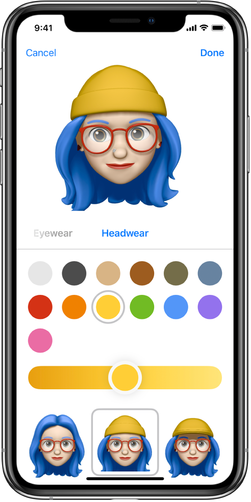Supported iPhone models
This guide helps you get started using iPhone and discover all the amazing things it can do on iOS 13.6, which is compatible with the following models:
You can update to the latest iOS software if your model supports it. To see the model and software version of your iPhone, go to Settings > General > About. See Get information about your iPhone.
Your features and apps may vary depending on your iPhone model, region, language, and carrier. To find out which features are supported in your region, see the iOS and iPadOS Feature Availability website.
Note: Apps and services that send or receive data over a cellular network may incur additional fees. Contact your carrier for information about your service plan and fees.
Set up and get started
Turn on and set up your new iPhone over an Internet connection. You can also set up iPhone by connecting it to your computer. If you have another iPhone, iPad, iPod touch, or an Android device, you can transfer your data to your new iPhone. Note: If your iPhone is deployed or managed by a company or other organization, see an administrator for setup instructions. For general information, see the Apple at Work website.
Prepare for setup
To make setup as smooth as possible, have the following items available:
- An Internet connection through a Wi-Fi network (you may need the name and password of the network) or cellular data service through a carrier
- Your Apple ID and password; if you don’t have an Apple ID, you can create one during setup
- Your credit or debit card account information, if you want to add a card to Apple Pay during setup
- Your previous iPhone or a backup of your device, if you’re transferring your data to your new device
- Your Android device, if you’re transferring your Android content
Turn on and set up your iPhone
- Press and hold the side button or Sleep/Wake button (depending on your model) until the Apple logo appears.
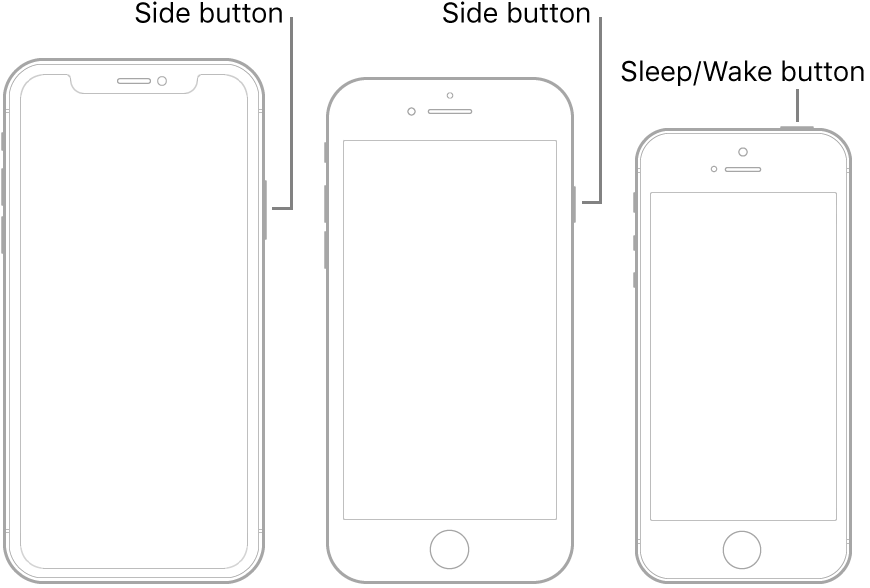
If iPhone doesn’t turn on, you might need to charge the battery. For more help, see the Apple Support article If your iPhone, iPad, or iPod touch won’t turn on or is frozen.
-
Do one of the following:
-
Tap Set Up Manually, then follow the onscreen setup instructions.
-
If you have another iPhone, iPad, or iPod touch with iOS 11, iPadOS 13, or later, you can use Quick Start to automatically set up your new device. Bring the two devices close together, then follow the onscreen instructions to securely copy many of your settings, preferences, and iCloud Keychain. You can then restore the rest of your data and content to your new device from your iCloud backup.
Or, if both devices have iOS 12.4, iPadOS 13, or later, you can transfer all your data wirelessly from your previous device to your new one. Keep your devices near each other and plugged into power until the migration process is complete.
You can also transfer your data using a wired connection between your devices. See Use Quick Start to transfer data from your previous iOS device to your new iPhone, iPad, or iPod touch.
-
If you’re blind or have low vision, triple-click the side button (on an iPhone with Face ID) or triple-click the Home button (on other iPhone models) to turn on VoiceOver, the screen reader. You can also double-tap the screen with three fingers to turn on Zoom.
- Tap Set Up Manually, then follow the onscreen setup instructions.
-
If you have another iPhone, iPad, or iPod touch with iOS 11, iPadOS 13, or later, you can use Quick Start to automatically set up your new device. Bring the two devices close together, then follow the onscreen instructions to securely copy many of your settings, preferences, and iCloud Keychain. You can then restore the rest of your data and content to your new device from your iCloud backup.
Or, if both devices have iOS 12.4, iPadOS 13, or later, you can transfer all your data wirelessly from your previous device to your new one. Keep your devices near each other and plugged into power until the migration process is complete.
You can also transfer your data using a wired connection between your devices. See Use Quick Start to transfer data from your previous iOS device to your new iPhone, iPad, or iPod touch.
-
If you’re blind or have low vision, triple-click the side button (on an iPhone with Face ID) or triple-click the Home button (on other iPhone models) to turn on VoiceOver, the screen reader. You can also double-tap the screen with three fingers to turn on Zoom.
Basics
Open apps on the iPhone Home screen
Get to know the Home screen and apps on your iPhone. The Home screen shows all your apps organized into pages. More pages are added when you need space for apps.
- To go to the Home screen, swipe up from the bottom edge of the screen (on an iPhone with Face ID) or press the Home button (on other iPhone models). 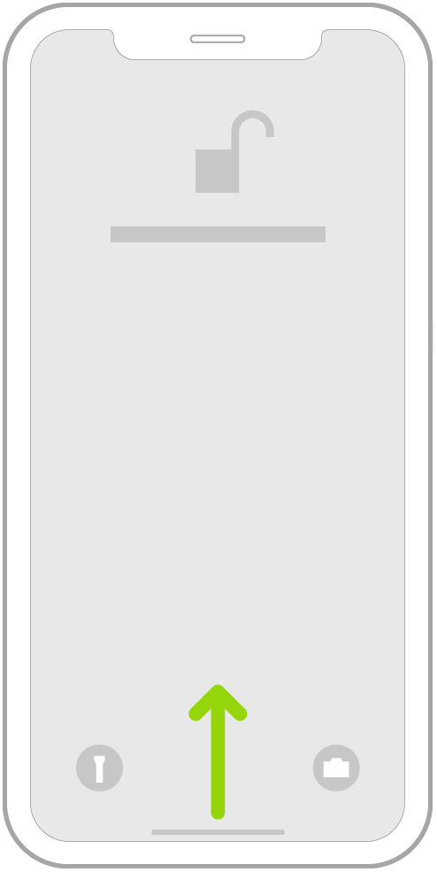
- Swipe left or right to browse apps on other Home screen pages. 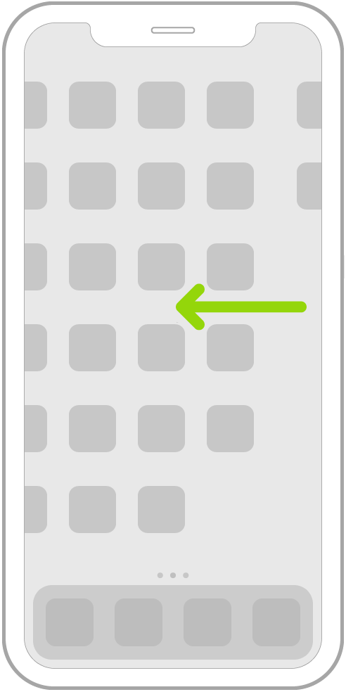
- To open an app, tap its icon on the Home screen.
- To return to the first Home screen page, swipe up from the bottom edge of the screen (on an iPhone with Face ID) or press the Home button (on other iPhone models).
Use iPhone to search
When you search on iPhone, you get results from the Internet, from media and other content on your iPhone, from the App Store and the iTunes Store, and from your apps, like Maps and Contacts. Powered by Siri, Search offers suggestions and updates results as you type. In Settings , you can specify which apps you want to be included in search results.
Search with iPhone
- Swipe down from the middle of the Home screen.
- Tap the search field, then enter what you’re looking for.
- Do any of the following:
- Hide the keyboard and see more results on the screen: Tap Search
- Open a suggested app: Tap it.
- Get more information about a search suggestion: Tap it, then tap one of the results to open it.
- Start a new search: Tap the Clear Text button in the search field. 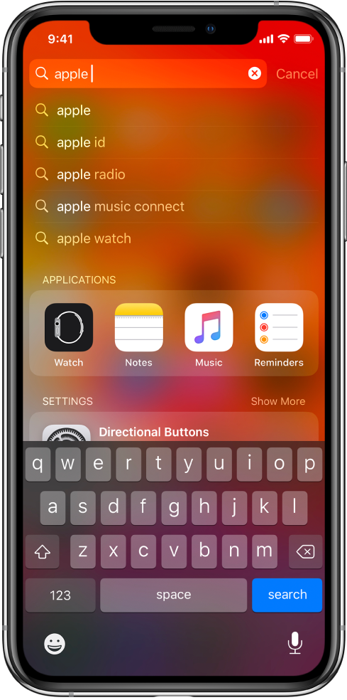
Choose which apps to include in Search
- Go to Settings > Siri & Search.
- Scroll down, tap an app, then turn Show in Search on or off.
Turn off Suggestions in Search
Go to Settings > Siri & Search, then turn off Suggestions in Search.
Turn off Location Services for suggestions
- Go to Settings > Privacy > Location Services.
- Tap System Services, then turn off Location-Based Suggestions.
Search in apps
Many apps include a search field or a search button so you can find something within the app. For example, in the Maps app, you can search for a specific location.
-
In an app, tap the search field or button the Search button (if there is one).
If you don’t see a search field or button, swipe down from the top.
- Type your search, then tap Search.
Ask Siri on iPhone
Talking to Siri is a quick way to get things done. Ask Siri to translate a phrase, set a timer, find a location, report on the weather, and more. The more you use Siri, the better it knows what you need.
To use Siri, iPhone must be connected to the Internet. Cellular charges may apply.
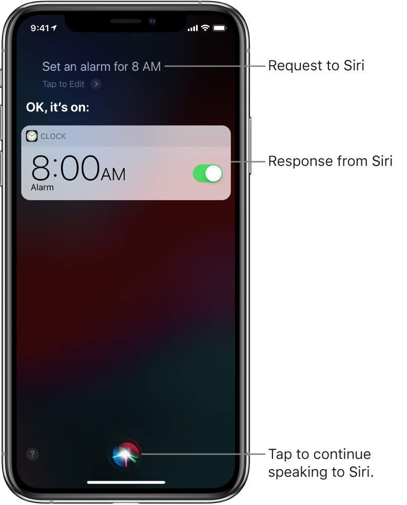Set up Siri
If you didn’t set up Siri when you first set up your iPhone, go to Settings > Siri & Search, then turn on the following:
- Listen for “Hey Siri”
- Press Side Button for Siri (on an iPhone with Face ID) or Press Home for Siri (on an iPhone with a Home button)
Summon Siri with your voice
- Say “Hey Siri,” then ask Siri a question or to do a task for you.
For example, say something like “Hey Siri, how’s the weather today?” or “Hey Siri, set an alarm for 8 a.m.”
- To ask Siri another question or to do another task, tap the Listen button.
Note: To prevent iPhone from responding to “Hey Siri,” place your iPhone face down, or go to Settings > Siri & Search, then turn off Listen for “Hey Siri.”
You can also say “Hey Siri” to summon Siri while wearing AirPods Pro or AirPods (2nd generation). See Use Siri with AirPods on iPhone.
Summon Siri with a button
-
- On an iPhone with Face ID: Press and hold the side button.
- On an iPhone with a Home button: Press and hold the Home button.
- EarPods: Press and hold the center or call button.
- CarPlay: Press and hold the voice command button on the steering wheel, or touch and hold the Home button on the CarPlay Home screen. (See Use Siri to Control CarPlay.)
- Siri Eyes Free: Press and hold the voice command button on your steering wheel.
- When Siri appears, ask Siri a question or to do a task for you.
For example, say something like “What’s 18 percent of 225?” or “Set the timer for 3 minutes.”
- To ask Siri another question or to do another task, tap the Listen button.
You can also summon Siri with a press and hold or a double tap on AirPods. See Adjust AirPods settings with iPhone.
Make a correction if Siri misunderstands you
- Rephrase your request: Tap the Listen button, then say your request in a different way.
- Spell out part of your request: Tap the Listen button, then repeat your request by spelling out any words that Siri didn’t understand. For example, say “Call,” then spell the person’s name.
- Edit your request with text: Above the response from Siri, tap “Tap to Edit,” then use the onscreen keyboard.
- Change a message before sending it: Say “Change it.”
Type instead of speaking to Siri
- Go to Settings > Accessibility > Siri, then turn on Type to Siri.
- To make a request, summon Siri, then use the keyboard and text field to ask Siri a question or to do a task for you.
Siri is designed to protect your information, and you can choose what you share. To learn more, go to Settings > Siri & Search > About Ask Siri & Privacy.
Apps
Get apps, games, and fonts in the App Store on iPhone
In the App Store app , you can discover new apps and games, download custom fonts, and learn tips and tricks. You can also subscribe to Apple Arcade (not available in all countries or regions) and access new games on iPhone, iPad, iPod touch, Mac, and Apple TV.
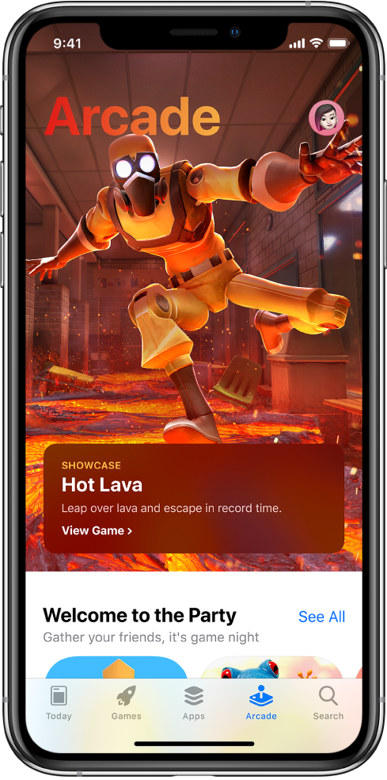Find apps, games, and fonts
Ask Siri. Say something like: “Search the App Store for cooking apps” or “Get the Minecraft app.” Learn how to ask Siri.
You can also tap any of the following:
- Today: Discover featured stories and apps.
- Games or Apps: Explore new releases, see the top charts, or browse by category.
- Arcade: Subscribe to Apple Arcade and access new games on your iPhone, iPad, iPod touch, Mac, and Apple TV.
- Search: Enter what you’re looking for, then tap Search on the keyboard.
Buy and download an app
-
To buy an app, tap the price. If the app is free, tap Get.
If you see the Download button instead of a price, you already purchased the app, and you can download it again without a charge.
- If required, authenticate your Apple ID with Face ID, Touch ID, or your passcode to complete your purchase.
While the app is downloading, its icon appears on the Home screen with a progress indicator.
Install fonts
You can get fonts from the App Store to use in documents you create on iPhone.
- After you download an app containing fonts from the App Store, open the app to install the fonts.
- To manage installed fonts, go to Settings > General > Fonts.
Share or give an app
- Tap the app to see its details.
- Tap the More button, then tap Share or Gift App (not available for all apps).
Give or redeem an App Store & iTunes gift card
- Tap the My Account button or your profile picture at the top right.
- Tap one of the following:
- Redeem Gift Card or Code
- Send Gift Card by Email
Note: You need an Internet connection and an Apple ID to use the App Store. The availability of the App Store and Apple Arcade varies by country or region. Not all Apple Arcade content shown may be available at service availability. See the Apple Support article Availability of Apple Media Services.
Family Sharing
Set up Family Sharing
With Family Sharing, up to six family members can share iTunes Store, App Store, and Apple Books purchases; an Apple Music family membership; an Apple News+ subscription; an Apple Arcade subscription; an Apple TV+ subscription; Apple TV channels subscriptions; an iCloud storage plan; Screen Time information; a family calendar; family photos; and more, all without sharing accounts.
To use Family Sharing, one adult family member (the organizer) chooses features for the family to share and invites up to five additional family members to participate. When family members join, Family Sharing is set up on their devices automatically.
Family Sharing requires you (the organizer) to sign in with your Apple ID and to confirm the Apple ID you use for the iTunes Store, the App Store, and Apple Books (you usually use the same Apple ID for everything). Family Sharing is available on devices that meet these minimum system requirements: iOS 8, iPadOS 13, a Mac with OS X 10.10, or a PC with iCloud for Windows 7. You can be part of only one family group at a time.
Note: You can set up Screen Time for individual family members either through Family Sharing on your device or separately on their own devices. See Set up Screen Time for a family member on iPhone.
Get Started with Family Sharing
- Go to Settings > [your name] > Set Up Family Sharing.
- Tap the features you want to share:
- Purchase Sharing
- iCloud Storage
- Location Sharing
- Screen Time
- Apple Music
- Apple TV+
- TV Channels
- Apple Arcade
- Apple News+
-
Follow the onscreen instructions to sign up.
Depending on the features you choose, you may be asked to set up an Apple Music family membership or an iCloud Storage subscription. If you choose to share iTunes Store, App Store, and Apple Books purchases with your family members, you agree to pay for any purchases they initiate while part of the family group.
Create an Apple ID for a child
- Go to Settings > [your name] > Family Sharing > Add Family Member.
-
Tap Create a Child Account, then follow the onscreen instructions.
The child’s account is added to your family until the child is at least 13 years old. See the Apple Support article Family Sharing and Apple ID for your child.
Accept an invitation to Family Sharing
Tap Accept in the invitation.
Or, if you’re near the organizer during the setup process, you can enter your Apple ID and password on the Family Member’s Apple ID screen on the organizer’s device.
Leave Family Sharing
Any family member can leave the Family Sharing group, but only the organizer can stop family sharing.
- Go to Settings > [your name] > Family Sharing > [your name].
-
Tap Leave Family.
If you’re the organizer, tap Stop Family Sharing.
See the Apple Support article Leave Family Sharing.
Accessories
Accessories included with iPhone
The following accessories are included with iPhone
USB-C to Lightning Cable (iPhone 11 Pro and iPhone 11 Pro Max) Use the cable to connect iPhone to the USB-C power adapter or to a computer.
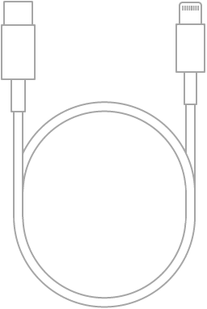Lightning to USB Cable (other models) Use the cable to connect iPhone to the USB power adapter or to a computer.
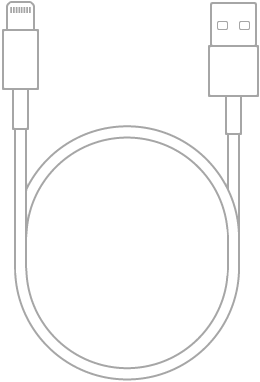18W USB-C Power Adapter (iPhone 11 Pro and iPhone 11 Pro Max) Use the adapter with the USB-C to Lightning Cable to charge the iPhone battery.
Apple USB power adapter (other models) Use the adapter with the Lightning to USB Cable to charge the iPhone battery. The size and type of the adapter depends on your iPhone model and your country or region.
SIM eject tool (not included in all countries or regions) Use the tool to eject the SIM card tray. See Set up cellular service on iPhone.
EarPods with Lightning Connector (iPhone 7 and later) Use the headset to listen to music and videos, and make phone calls. The EarPods feature a microphone, volume buttons, and the center button.
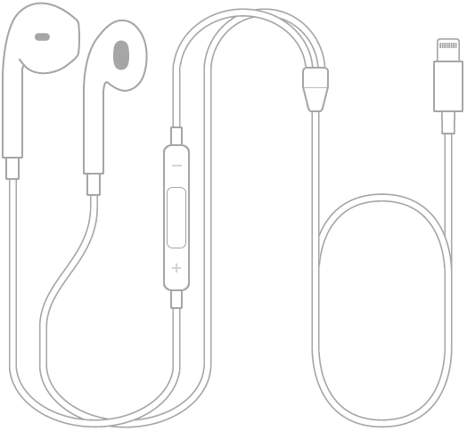Use the center button to answer and end calls, control audio and video playback, and use Siri, even when iPhone is locked.
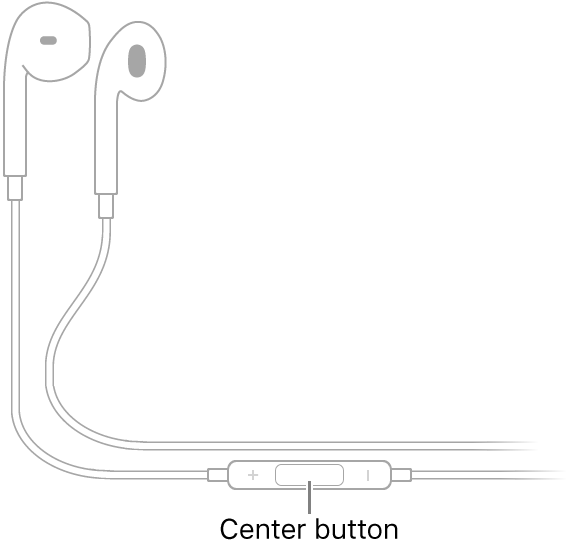Control audio with your EarPods
- Pause a song or video: Press the center button. Press again to resume playback.
- Skip to the next song: Press the center button twice quickly.
- Return to the beginning of the song or to the previous song: To return to the beginning of the song, press the center button three times quickly. To return to the previous song, again press the center button three times quickly.
- Fast-forward: Press the center button twice quickly and hold.
Manage calls using your EarPods
- Answer an incoming call: Press the center button.
- End the current call: Press the center button.
- Switch to an incoming or on-hold call, and put the current call on hold: Press the center button. Press again to switch back to the first call.
Activate Siri from your EarPods
- Ask Siri: Press and hold the center button until you hear a beep. Let go, then make your request.
You can use Health on iPhone to monitor the audio levels from your EarPods. It can be helpful to understand how long and often you’re exposed to loud volume as it can affect your hearing. See Monitor audio levels on iPhone.
Listen with AirPods on iPhone
Use AirPods to listen to audio from your iPhone.
Hear what’s playing on your iPhone
Put one or both AirPods in your ears.
Tip: You can share what you’re listening to with a friend wearing AirPods or compatible Beats headphones or earphones. See Share audio with AirPods and Beats headphones from iPhone.
Stop the audio
Remove both AirPods from your ears, or if you’re wearing just one, remove it.
If you return one to your ear within 15 seconds, play resumes automatically.
Pause the audio
- All the models: While listening with both AirPods, remove one. When you return it to your ear, playback resumes automatically.
-
AirPods Pro:
Press the Force Sensor on either of your AirPods. To resume playback, press again.
Note: If you press the Force Sensor for too long, a chime sounds, and the noise control mode changes. Press and hold the Force Sensor to return to the mode you want, then try to pause or resume the playback again.
- AirPods: (2nd generation) Double-tap either of your AirPods. To resume play, double-tap it again.
- AirPods: (1st generation) You can set either of your AirPods to pause when you double-tap it, then resume play when you double-tap it again. See Adjust AirPods settings with iPhone.
Skip tracks
- AirPods Pro: To skip forward, double-press the Force Sensor on either of your AirPods. To skip back, triple-press the sensor.
- AirPods: (2nd generation) To skip forward, double-tap either of your AirPods. You can set either of them to skip back when you double-tap it. See Adjust AirPods settings with iPhone.
- AirPods:(1st generation) You can set either of your AirPods to skip forward or back when you double-tap it. See Adjust AirPods settings with iPhone.
Change noise control modes (AirPods Pro)
Open Control Center, press and hold the volume control, then choose one of these settings at the bottom of the screen:
- Noise Cancellation: Blocks out external sounds.
- Transparency: Lets you hear the environment around you.
- Off: Turns off both noise cancellation and transparency.
Tip: To quickly change modes, press and hold the Force Sensor on either of your AirPods Pro until you hear a chime. (In Settings, you can choose which modes are available. See Adjust AirPods settings with iPhone.)
Change the volume
Summon Siri, then say something like “Turn down the volume.” Or drag the volume slider on the playback destination screen, on the Lock screen, or in Control Center.
You can use Health on iPhone to monitor the audio levels from your AirPods. It can be helpful to understand how long and often you’re exposed to loud volume as it can affect your hearing. See Monitor audio levels on iPhone.
For more information about AirPods, including how to clean them and how to use them with Macs and other Bluetooth devices, see the AirPods support website.